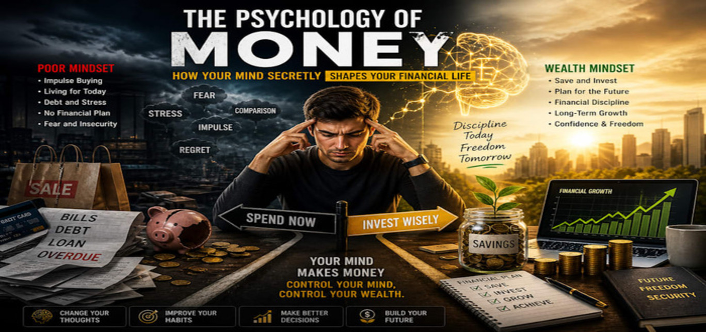

Money is more than numbers in a bank account. It is deeply connected to emotions, habits, beliefs, and life experiences.
That is why two people earning the same income can have completely different financial outcomes.
One may save and invest consistently, while the other spends impulsively or avoids dealing with money altogether. The difference often comes down to money archetypes.
Money archetypes are personality patterns that influence how people think, feel, and behave around money. Understanding your money archetype can help you uncover why you make certain financial decisions, where your strengths lie, and what habits may be holding you back. Whether you are a spender, saver, risk-taker, or avoider, learning your financial personality can be the first step toward a healthier relationship with money.
In this article, we will explore what money archetypes are, the most common types, how they affect your financial life, and practical ways to use this knowledge to improve your money habits.
What Are Money Archetypes?
Money archetypes are recurring financial behavior patterns shaped by personality, upbringing, culture, fears, and beliefs about wealth. They explain the emotional side of money and why people approach earning, spending, saving, and investing in different ways.
For example, someone who grew up in a home where money was always scarce may become extremely cautious with spending. Another person raised in an environment where status and appearance were important may be more likely to spend money on luxury items or experiences. These patterns often continue into adulthood unless they are recognized and intentionally changed.
Money archetypes are not meant to label or limit you. Instead, they act as a mirror, helping you better understand your financial habits and motivations. Most people are not just one archetype. In fact, many people have a combination of two or three dominant money personalities.
Why Understanding Money Archetypes Matters
Understanding your money archetype can be powerful for several reasons:
1. It reveals the “why” behind your financial habits
Budgeting advice often focuses on what to do, but archetypes help explain why you do what you do with money. If you understand the emotional root of your spending or saving patterns, it becomes easier to make lasting changes.
2. It helps you make better financial decisions
When you know your strengths and weaknesses, you can build a financial system that works for your personality instead of against it.
3. It improves relationships
Money is one of the biggest causes of conflict in relationships. If you and your partner have different money archetypes, understanding them can reduce tension and improve communication.
4. It supports long-term financial growth
Self-awareness is a major part of financial success. When you know your money triggers, you can create better habits around saving, debt, investing, and spending.
The Most Common Money Archetypes
There are many ways to classify money personalities, but the following archetypes are among the most common. As you read through them, you may recognize yourself in one or more.
1. The Saver
The Saver feels secure when money is being preserved. This person is disciplined, cautious, and usually good at budgeting. Savers often prioritize emergency funds, long-term planning, and avoiding unnecessary expenses.
Strengths of the Saver
- Strong self-control with spending
- Good at budgeting and planning
- Usually prepared for emergencies
- More likely to invest consistently over time
Challenges of the Saver
- May become overly fearful about spending
- Can struggle to enjoy money even when financially stable
- May avoid taking healthy investment risks
- Can become anxious about financial uncertainty
How the Saver can grow
Savers benefit from learning that money is not only for protection but also for living. Setting aside a guilt-free “enjoyment budget” can help create balance between security and enjoyment.
2. The Spender
The Spender enjoys using money to create comfort, excitement, pleasure, or status. Spending can feel rewarding, empowering, or emotionally soothing. Spenders often love experiences, fashion, gifts, dining out, or treating themselves and others.
Strengths of the Spender
- Generous and often fun-loving
- Comfortable enjoying the fruits of their labor
- Can be optimistic and abundant in mindset
- Often good at creating memorable experiences
Challenges of the Spender
- May struggle with impulse purchases
- Can find budgeting restrictive
- May prioritize short-term pleasure over long-term goals
- Can accumulate debt if spending is not managed
How the Spender can grow
Spenders do well with systems that allow freedom while still creating structure. For example, using separate spending accounts, weekly allowances, or a 24-hour rule before making non-essential purchases can reduce impulse spending.
3. The Avoider
The Avoider feels stressed, overwhelmed, or uncomfortable dealing with money. This person may ignore bills, delay budgeting, avoid checking bank balances, or put off financial planning altogether. Avoiders often want financial peace, but the process of managing money feels emotionally draining.
Strengths of the Avoider
- Often values peace and simplicity
- May not be highly materialistic
- Can be generous and emotionally driven
- Often wants to reduce financial conflict
Challenges of the Avoider
- Ignores financial problems until they become urgent
- May have unclear financial goals
- Can miss opportunities to save, invest, or reduce debt
- Often experiences guilt or shame around money
How the Avoider can grow
The Avoider benefits from making money management feel simple and non-threatening. Automating bills, setting short weekly “money check-in” sessions, and working with a financial coach or accountability partner can make a big difference.
4. The Security Seeker
The Security Seeker values financial safety above all else. While similar to the Saver, this archetype is often driven more by fear of instability than by discipline alone. Security Seekers may constantly worry about losing money, job insecurity, or unexpected expenses.
Strengths of the Security Seeker
- Highly motivated to prepare for the future
- Usually careful with debt and risk
- Strong awareness of financial responsibility
- Good at building financial buffers
Challenges of the Security Seeker
- May live in constant financial anxiety
- Can avoid opportunities that involve reasonable risk
- May overwork or hoard money from fear
- Can struggle to trust financial progress
How the Security Seeker can grow
This archetype benefits from building confidence through clear plans. Knowing exactly how much is needed for emergency savings, retirement, and monthly expenses can reduce fear and create peace of mind.
5. The Risk-Taker
The Risk-Taker is energized by possibility, growth, and opportunity. This person may be drawn to entrepreneurship, aggressive investing, trading, or bold financial decisions. Risk-Takers often believe money is meant to be multiplied and used as a tool for growth.
Strengths of the Risk-Taker
- Bold and opportunity-focused
- Comfortable with uncertainty
- Often entrepreneurial and innovative
- May build wealth quickly when disciplined
Challenges of the Risk-Taker
- Can underestimate downside risk
- May make emotional or impulsive investment decisions
- Might neglect savings or emergency planning
- Can swing between financial highs and lows
How the Risk-Taker can grow
Risk-Takers do best when they balance ambition with structure. A strong emergency fund, diversified investments, and a rule for how much capital can be risked can protect them from unnecessary losses.
6. The Giver
The Giver finds joy and identity in helping others financially. This may include supporting family, donating to causes, paying for friends, or taking on financial burdens to help loved ones. Givers are often generous, compassionate, and community-minded.
Strengths of the Giver
- Generous and empathetic
- Values people over possessions
- Often creates strong family and community bonds
- Can use money in deeply meaningful ways
Challenges of the Giver
- May neglect personal financial needs
- Can struggle to say no
- Might feel guilty about setting boundaries
- May take on other people’s financial problems
How the Giver can grow
Givers need to remember that generosity is healthiest when it comes from stability, not self-sacrifice. Setting a giving budget and learning to separate support from rescue can help preserve both relationships and financial health.
7. The Status Seeker
The Status Seeker uses money as a way to signal success, identity, or achievement. This person may be motivated by appearances, recognition, luxury, or social comparison. While not always negative, this archetype can lead to overspending if self-worth becomes tied to visible wealth.
Strengths of the Status Seeker
- Highly motivated to succeed financially
- Often ambitious and career-driven
- Can be skilled at building a strong image or brand
- Values quality and achievement
Challenges of the Status Seeker
- Can overspend to maintain appearances
- May compare themselves constantly to others
- Might prioritize image over financial security
- Can experience pressure to “look successful”
How the Status Seeker can grow
The key for this archetype is separating self-worth from spending. Focusing on net worth, financial freedom, and personal values rather than external validation can create a more sustainable relationship with money.
8. The Money Monk
The Money Monk believes money is not that important or may even be uncomfortable with wealth. This archetype may associate money with greed, corruption, stress, or selfishness. Money Monks often prefer simplicity, purpose, and non-material success.
Strengths of the Money Monk
- Not overly attached to material possessions
- Values meaning and purpose over status
- Often humble and grounded
- Can live contentedly with less
Challenges of the Money Monk
- May undercharge for their work
- Can avoid wealth-building opportunities
- Might feel guilty about wanting more money
- Can struggle with practical financial planning
How the Money Monk can grow
Money Monks benefit from reframing money as a tool rather than a moral issue. Earning well does not mean becoming greedy. It can mean having the resources to live well, help others, and support meaningful goals.
Can You Have More Than One Money Archetype?
Yes. In fact, most people do. You may be a Saver-Spender, a Giver-Avoider, or a Risk-Taker with Security-Seeker tendencies. Different archetypes can show up in different situations. For example:
- You may be a saver with your salary but a spender when traveling
- You may be a giver with family but an avoider when it comes to debt
- You may be a risk-taker in business but a security seeker in personal finances
This is why self-awareness matters more than fitting perfectly into one category.
How Money Archetypes Are Formed
Money archetypes do not appear randomly. They are often shaped by:
Childhood experiences
What did your family teach you about money? Was money a source of stress, power, shame, or freedom?
Cultural beliefs
Different communities have different views on wealth, success, family support, and financial responsibility.
Past financial experiences
Debt, business success, unemployment, inheritance, or financial trauma can all shape how you behave with money.
Personality traits
Some people are naturally more cautious, emotional, impulsive, generous, or ambitious, and those traits influence money behavior.
How to Identify Your Money Archetype
If you want to discover your money archetype, ask yourself these questions:
- Do I feel safer when I save or when I spend?
- What emotions come up when I check my bank account?
- Do I avoid financial tasks like budgeting or paying bills?
- Do I spend money to feel good, reduce stress, or impress others?
- Do I feel guilty about having money or wanting more of it?
- Am I more likely to take risks or play it safe?
- How did my family talk about money when I was growing up?
Your answers can reveal the emotional patterns behind your financial decisions.
How to Use Money Archetypes to Improve Your Financial Life
Understanding your money archetype is only useful if you apply it. Here are practical ways to use this insight:
1. Build a money system around your personality
If you are an avoider, use automation. If you are a spender, create spending boundaries without making your budget feel like punishment. If you are a risk-taker, build safety nets before chasing big opportunities.
2. Notice emotional spending triggers
Track what emotions lead you to spend, save excessively, avoid money, or make risky decisions. Awareness reduces automatic behavior.
3. Set financial goals that match your values
The best financial plan is one you can stick to. Your goals should reflect what matters to you, not what social media or society says you should want.
4. Create balance
Every archetype has strengths and blind spots. A saver may need more joy. A spender may need more structure. A giver may need stronger boundaries. Growth often comes from balancing your dominant tendencies.
5. Seek support if needed
Sometimes money patterns are deeply emotional. A financial coach, therapist, mentor, or accountability partner can help you work through habits that feel hard to change alone.
Money archetypes help explain one of the most important truths in personal finance: money is never just about money. It is about safety, identity, freedom, fear, love, power, and possibility. The way you handle money is often tied to deeper beliefs and emotional patterns that were formed long before you opened your first bank account.
The good news is that once you understand your money archetype, you can begin to make conscious choices instead of automatic ones. You can stop judging yourself for your financial habits and start working with your personality rather than against it. Whether you are a saver, spender, avoider, giver, or risk-taker, awareness is the first step toward financial growth.
By understanding your money archetypes and learning how they influence your decisions, you can build a healthier, more intentional, and more empowered relationship with money.
SEO Keywords for This Topic
- money archetypes
- financial personality types
- relationship with money
- money mindset
- personal finance habits
- spending personality
- saving habits
- money behavior patterns
- financial self-awareness
- how to improve money habits